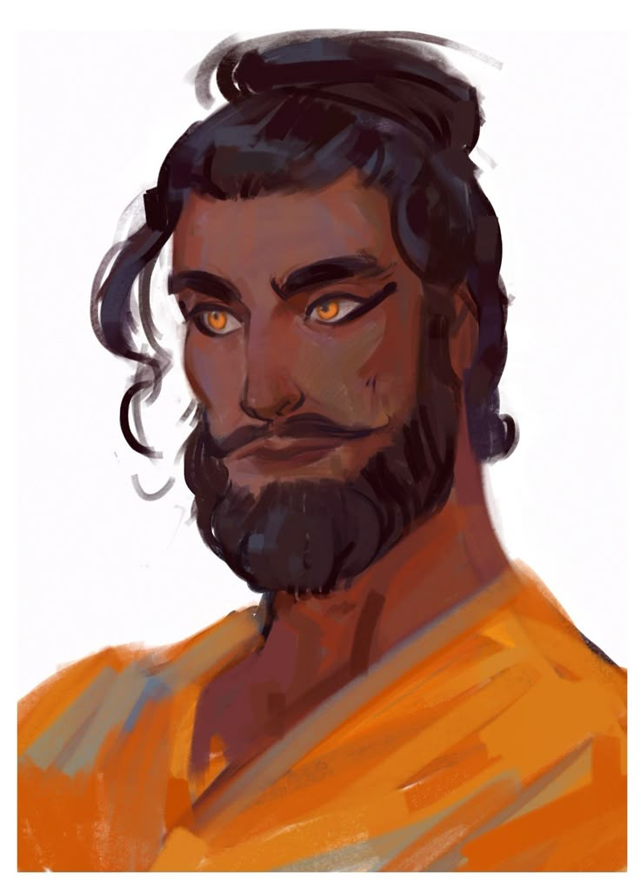
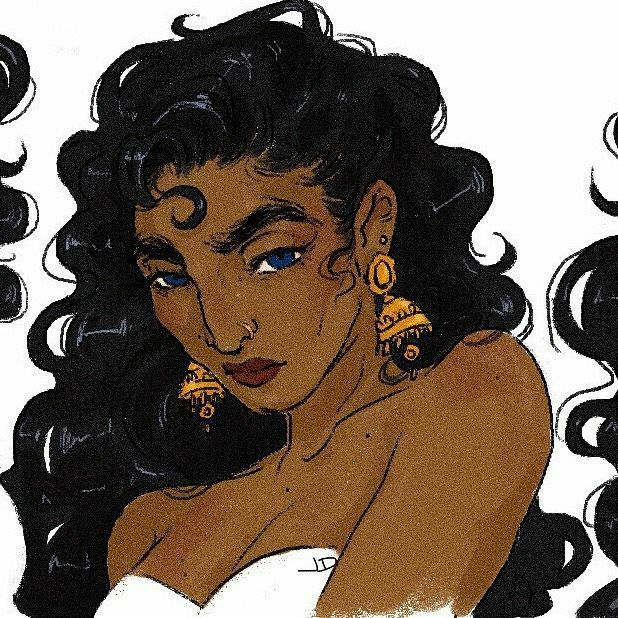
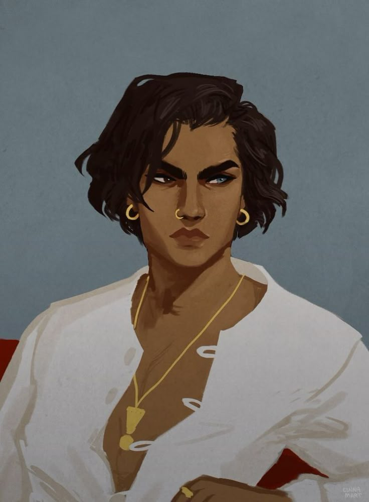
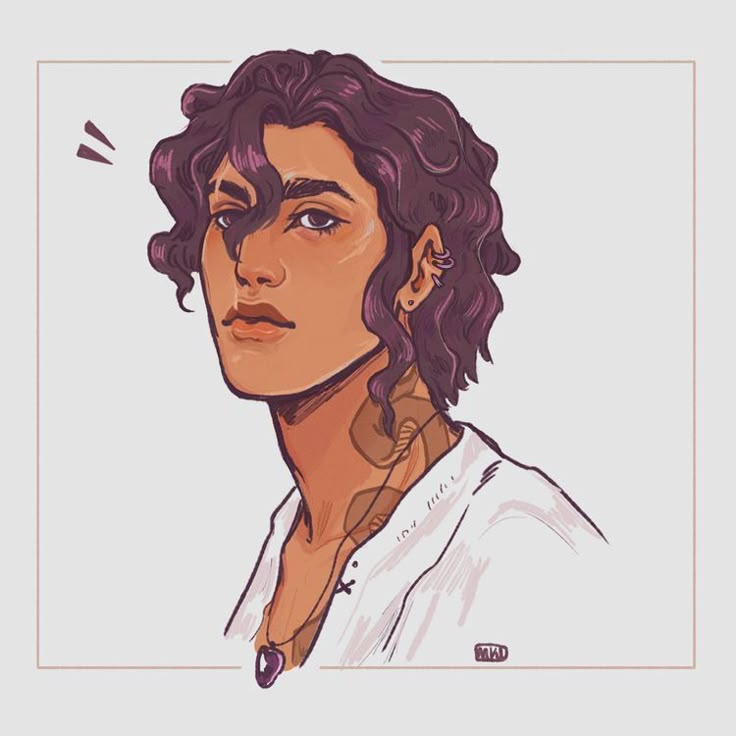

A Família Midas governa Yildun, o grande centro comercial do Reino Polaris e berço do Ouro, moeda do reino. Nascida entre mercadores, essa linhagem carrega os títulos de Conde e Condessa para seus governantes, e de Barão para seus herdeiros.
✦ CONDES DE YILDUN

✦ família midas
Orlen Midas
Orlen Midas comanda a vasta rede comercial que corre pelas veias de Yildun, o grande centro comercial do Reino Polaris. Sob sua gestão, as rotas de comércio prosperam e sustentam a economia de toda a região.

✦ família midas
Amira Midas
Responsável pela produção do Ouro, a moeda do reino, Amira Midas carrega uma linhagem de mercadores que soube conquistar a confiança da coroa. Foi sua bisavó, ainda comerciante, quem conheceu a Rainha Melia e mostrou à monarca o compromisso que elevou os Midas à nobreza.
✦ BARÕES DE YILDUN

✦ família midas
Zain Midas
Gêmeo de Samir, Zain Midas cresceu entre balanças e registros de mercadores. Junto ao irmão, cuida da entrada e da qualidade dos produtos que atravessam Yildun, zelando pelo padrão que sustenta o nome da família.

✦ família midas
Samir Midas
Irmão gêmeo de Zain, Samir Midas divide com ele a responsabilidade sobre a entrada e a qualidade dos produtos de Yildun. Ainda jovens, os dois já carregam o peso de manter viva a reputação construída pelos pais.